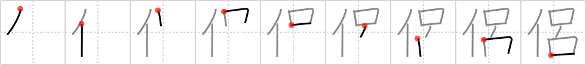

侶
← →
partner

Reading:
On-Yomi: リョ、ロ — Kun-Yomi: とも
Heisig story:
Person . . . spine.
Koohii stories:
1) [CharleyGarrett] 15-5-2007(53): Mr. T don't take a partner, especially one with no spine. "I pity da foo got no spine", he says.
2) [cameron_en] 7-11-2008(22): Mr. T needs a partner with a strong spine as he's a beast in the bedroom.
3) [brendanmacdonald] 14-9-2008(17): As a PARTNER, I want a PERSON with a strong SPINE.
4) [Gwindarr] 2-6-2009(11): Mr. T comes up behind you saying 'Howdy Pard'ner' while slapping you on the back in a friendly gesture, but shattering your spine unintentionally in the process.
5) [oregum] 4-11-2011(1): MR.T broke his partner's SPINE after he was double crossed.